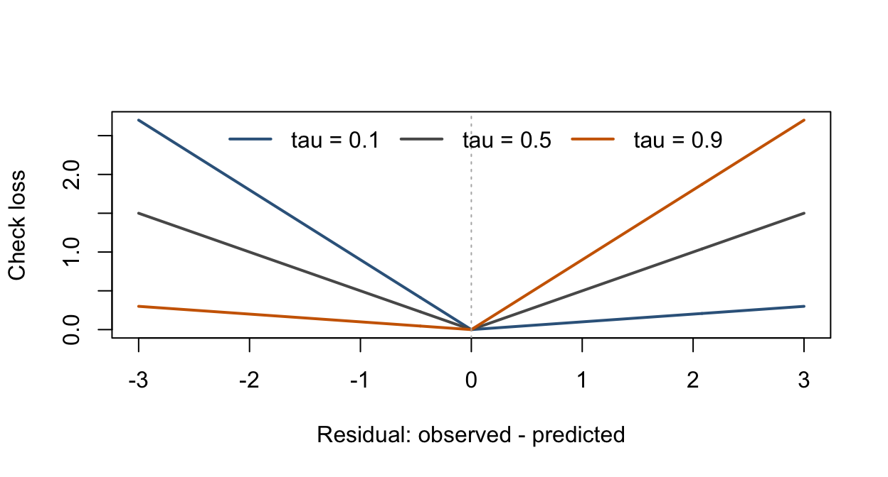

This reading extends the regression framework to conditional quantiles. It is supplementary to the main lecture sequence. Read Chapters 2, 5, and 8 first: least squares, coefficient interpretation, and diagnostics are the useful prerequisites. The R examples use the quantreg package; install it once with install.packages("quantreg") if needed.
F.1 When the mean is not the whole question
OLS describes a conditional mean. In some studies, the scientific question concerns a typical response, a low outcome, or an unusually high outcome. For example, average delivery time and the 90th percentile of delivery time answer different service-planning questions. A covariate may change the spread of the response even when its relationship with the mean is simple.
Definition F.1 (Conditional Quantile) For \(0<\tau<1\), define
A linear quantile model specifies \(Q_\tau(Y\mid X=x)=x^\top\beta_\tau\). The coefficients may vary with \(\tau\). At \(\tau=0.5\), the target is a conditional median.
Interpretation. Without an interaction involving \(x_j\), \(\beta_{\tau,j}\) is the change in the modeled conditional \(\tau\)-quantile for a one-unit change in \(x_j\), holding the other predictors fixed. This compares conditional distributions. It does not track a particular person who remains at the same percentile, and it is not automatically a causal effect.
ImportantUse all observations to estimate a conditional quantile
Fitting the 90th percentile does not mean selecting the largest 10% of responses and fitting OLS to them. Quantile regression uses the full dataset with a loss function that gives different penalties to positive and negative residuals. A marginal percentile of all responses is also different from a percentile conditional on the predictors.
Why a different loss? Least squares penalizes a residual \(u=y-x^\top b\) by \(u^2\). Quantile regression instead uses the check loss, also called pinball loss:
At \(\tau=0.5\), minimizing check loss is equivalent to minimizing the sum of absolute residuals. At \(\tau=0.9\), underpredicting the response costs nine times as much per unit as overpredicting it. The fitted target consequently moves toward the upper tail.
Proposition F.1 (Why Check Loss Targets a Quantile) If \(\mathbb{E}(|Y|)<\infty\), the minimizers of \(\mathbb{E}\{\rho_\tau(Y-a)\}\) are characterized by \(F(a-)\le\tau\le F(a)\); the conditional-quantile definition above selects the lower endpoint when the minimizer is not unique. Where \(F\) is continuous, the derivative with respect to \(a\) is \(F(a)-\tau\). It is nonpositive below a minimizing quantile and nonnegative above it. The same argument applies to the conditional distribution at a fixed \(x\).
Scope of the linear model. The population argument allows a different quantile at every \(x\). A linear quantile regression restricts these values to one linear function. If the true conditional quantile is nonlinear, the fitted line is a best approximation under the chosen loss, rather than an exact description at every predictor value.
Show R code
check_loss <-function(u, tau) u * (tau - (u <0))u <-seq(-3, 3, length.out =301)taus <-c(0.1, 0.5, 0.9)cols <-c("steelblue4", "gray35", "darkorange3")loss <-sapply(taus, function(tau) check_loss(u, tau))matplot(u, loss, type ="l", lty =1, lwd =2, col = cols,xlab ="Residual: observed - predicted", ylab ="Check loss")abline(v =0, lty =3, col ="gray70")legend("top", legend =paste("tau =", taus), col = cols,lty =1, lwd =2, bty ="n", horiz =TRUE)

Figure F.1: Check loss for three quantiles. A positive residual means the prediction is too low. The upper-quantile loss penalizes that side more strongly.
F.2 A mean model can miss changing spread
Consider the simulated model \(Y=5+2x+(0.5+0.8x)Z\), with \(0\le x\le4\) and \(Z\sim N(0,1)\) independent of \(x\). Its conditional mean and median are both \(5+2x\), while
The conditional-quantile slopes are \(2+0.8\Phi^{-1}(\tau)\). Different slopes here reflect changing spread, even though every observation follows the same data-generating model. Quantile regression need not be reserved for skewed distributions.
Show R code
set.seed(8561)n <-350x <-runif(n, 0, 4)dat_qr <-data.frame(x, y =5+2* x + (0.5+0.8* x) *rnorm(n))fit_mean <-lm(y ~ x, data = dat_qr)fit_quantiles <- quantreg::rq(y ~ x, tau = taus, data = dat_qr)round(coef(fit_quantiles), 3)
Figure F.2: Fitted conditional quantiles and the OLS mean in simulated data with increasing spread. The growing distance between the lower and upper quantiles reveals variation that a mean line alone does not describe.
Read the graph. Compare the predicted 10th, 50th, and 90th percentiles at a fixed \(x\). The gap between the 10th and 90th percentiles describes an interval containing the central 80% of a continuous conditional distribution when the quantile model is correct. The fitted gap is not a confidence interval for the mean or for a regression coefficient, and its predictive coverage is not guaranteed in a finite sample.
F.3 Uncertainty and practical checks
Quantile regression avoids a normal-error or constant-variance requirement for defining its target, but it is not assumption-free. Reliable estimation and inference still depend on the quantile specification, the design, the sampling structure, and sufficient information near the quantile of interest. Very extreme quantiles are difficult to estimate from small datasets.
A pairs-bootstrap illustration. These simulated observations are independent draws, so resampling whole \((x_i,y_i)\) pairs is appropriate. The code requests a bootstrap standard error for the median-regression slope and forms an approximate normal interval. The replicate count is kept moderate for the notes; increase it and check Monte Carlo stability in a substantive analysis.
Show R code
set.seed(8561)fit_median <- quantreg::rq(y ~ x, tau =0.5, data = dat_qr)median_summary <-summary(fit_median, se ="boot", R =499,bsmethod ="xy")b <-coef(fit_median)["x"]se_b <- median_summary$coefficients["x", "Std. Error"]c(slope =unname(b), bootstrap_SE = se_b,lower =unname(b -qnorm(0.975) * se_b),upper =unname(b +qnorm(0.975) * se_b))
This is not the exact finite-sample OLS t interval from Chapter 3. For dependent or clustered observations, an independent-pairs bootstrap generally fails to preserve the sampling structure. The package’s summary.rq() documentation describes alternative inference methods.
ImportantTwo fitted quantiles need a joint comparison
If one slope is significant at \(\tau=0.1\) and another is not significant at \(\tau=0.9\), that does not establish that the slopes differ. They are estimated from the same observations and are dependent. A difference such as \(\beta_{0.9,j}-\beta_{0.1,j}\) requires joint inference that retains this dependence, for example refitting both quantiles in each common bootstrap sample.
Before interpreting a fit: check the functional form, influential predictor values, the amount of information in the tails, and whether separately fitted quantiles cross. Linear loss is less sensitive to very large response residuals than squared loss, but it does not eliminate leverage problems. Crossing fitted quantiles cannot describe a valid ordered distribution at that \(x\); investigate misspecification or use methods that enforce ordering rather than silently relabeling the curves.
Evaluate the stated target. For held-out data, compare candidate predictions at the same \(\tau\) using mean check loss. A coverage diagnostic compares the fraction of responses below the predicted quantile with \(\tau\), including checks across meaningful predictor ranges. Good overall coverage can hide poor conditional coverage. Use splits that match future prediction, as in Chapter 10.
F.4 Optional application and self-study
NoteOptional application: household expenditure
The engel dataset bundled with quantreg contains income and food expenditure. Use data("engel", package = "quantreg"), plot the variables, and fit the 0.1, 0.5, and 0.9 conditional quantiles of foodexp given income. Explain how a household-expenditure quantile differs from mean expenditure. Treat the fitted relationships as descriptive associations, and avoid extrapolating beyond the observed incomes.
Use the loss definition to explain why the 90th percentile is penalized more for underprediction.
Derive the true intercept and slope at each quantile in the simulated example. Explain why the median and mean agree here.
Predict the 10th and 90th percentiles at \(x=1\) and \(x=3\). Explain what their widening gap means.
Design a bootstrap for comparing two quantile slopes. State which observations must stay together if the data are clustered.
Suggested reading. Start with the quantreg package documentation, then the vignette available through vignette("rq", package = "quantreg"). Roger Koenker’s Quantile Regression develops the estimation and inference theory in greater depth.